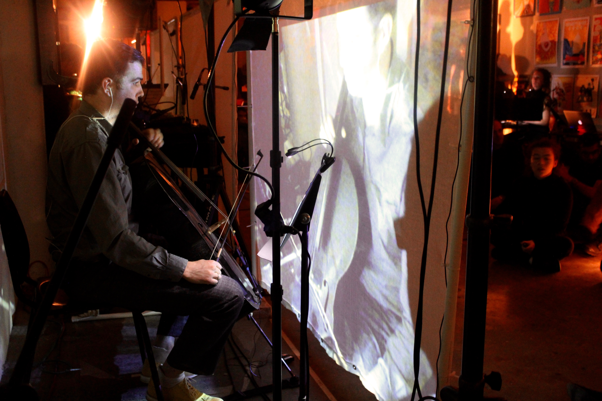
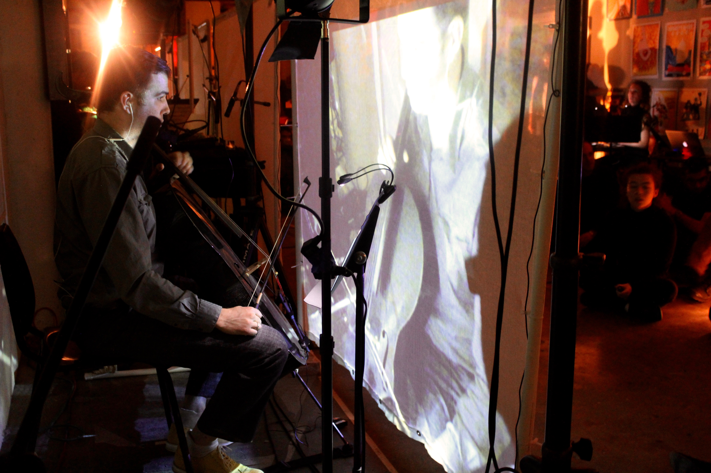
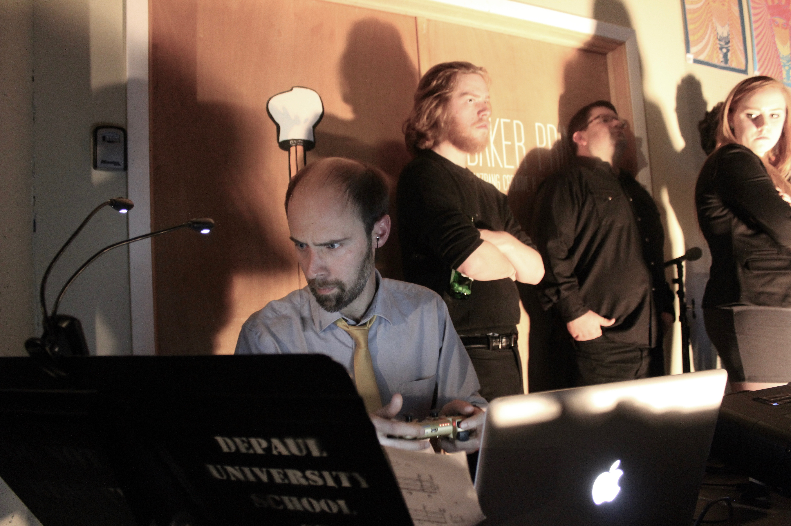
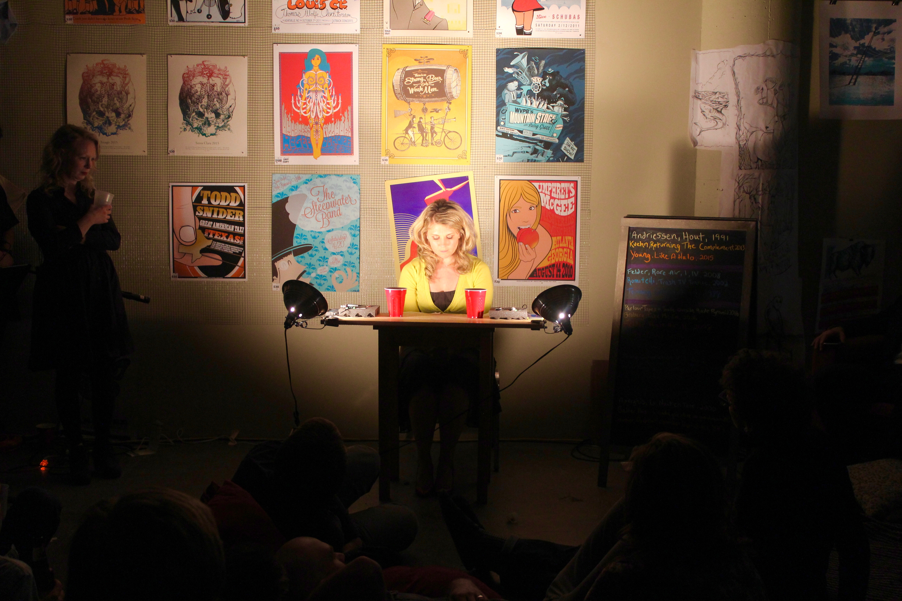
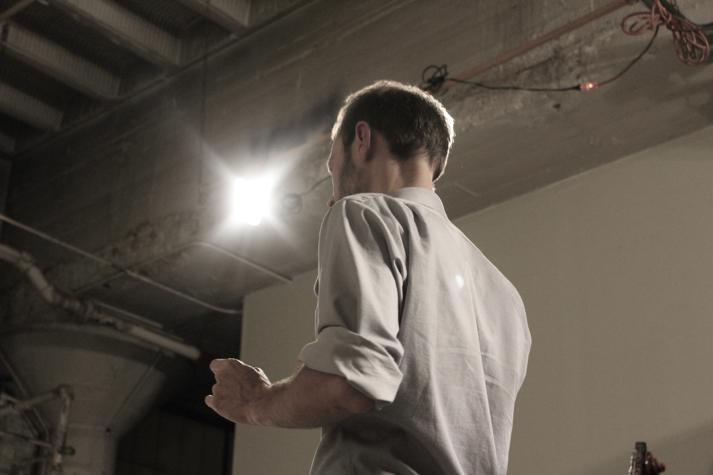
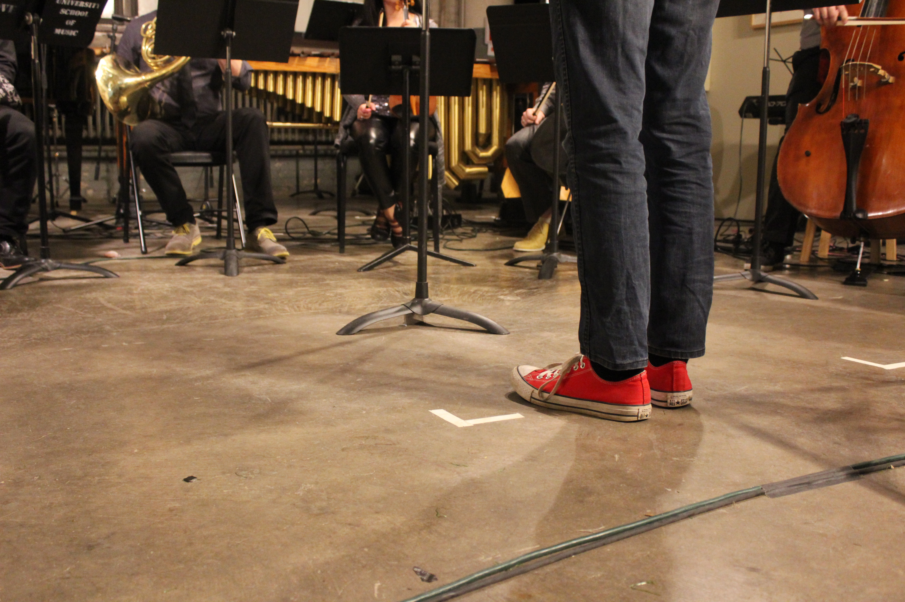
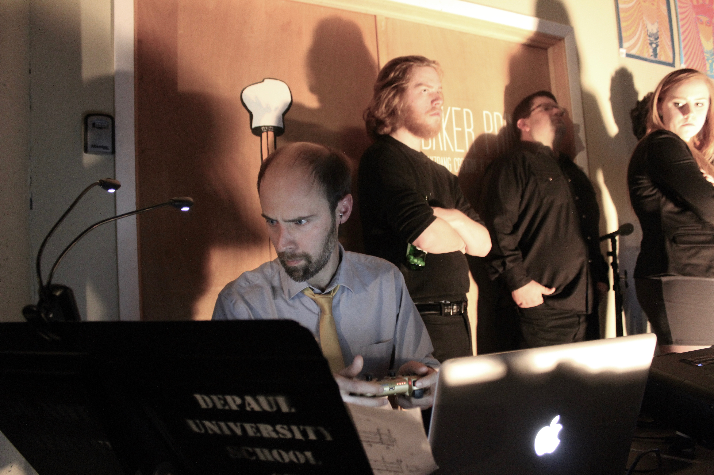
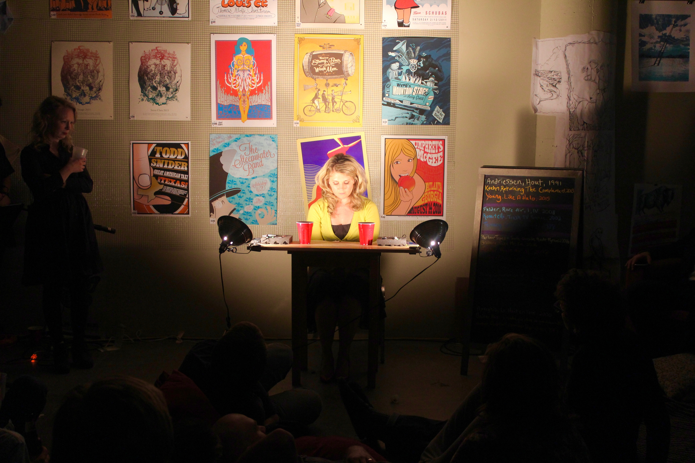
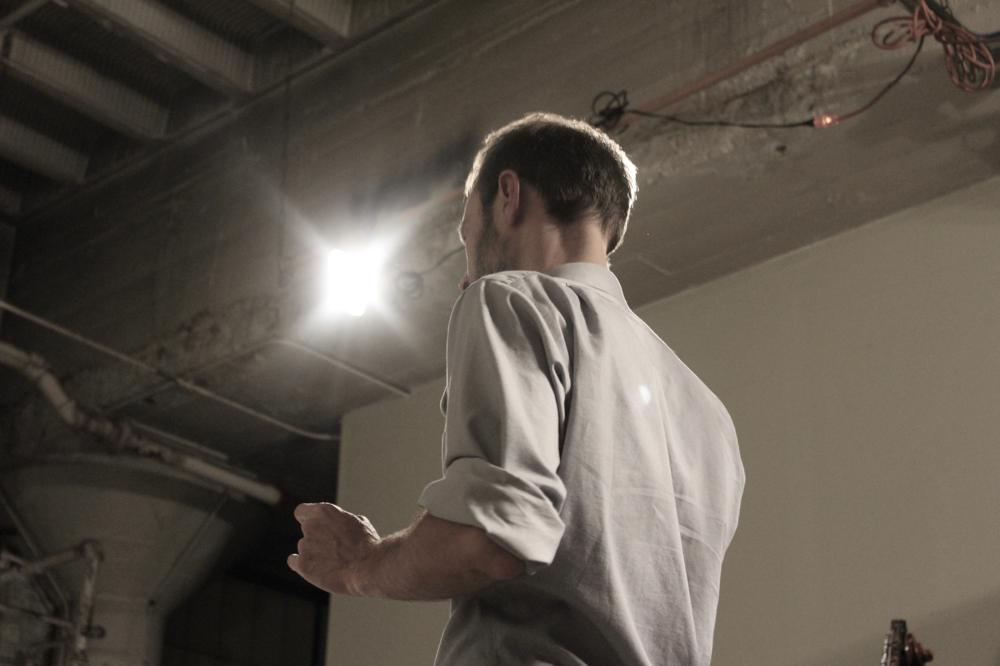
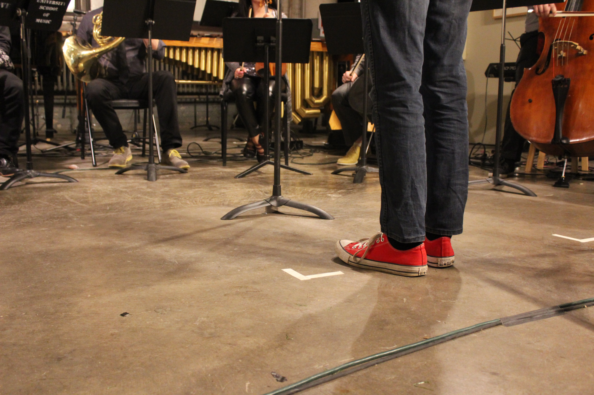

If you were to wander into 4045 N. Rockwell Street somewhere between the hours of five and six on April 30th, you’d stumble upon what was perhaps the most eclectic pre-game in history. The pre-concert hour of Ensemble Dal Niente’s Party 2016 kicked off with live performances of works by Erik Satie and Esa-Pekka Salonen (with an arrangement of Daft Punk’s “Get Lucky”) thrown in the mix) before segueing into a faux-Dating Game segment featuring members of the audience.
Then, hardly pausing for breath, the game show “host” broke into a rendition of Stephen Sondheim’s “Losing My Mind” from Follies, an accompanist springing out of nowhere to take a seat behind the piano.
“I have no idea what’s going on,” someone near me whispered.
Whatever you do, don’t tell Ensemble Dal Niente to focus. Embarking on everything from audiovisual projects to cultural exchanges with Latin American composers to its latest venture—a CD produced in collaboration with the indie rock band Deerhoof—the Chicago-based music collective traverses contemporary music’s far-flung worlds with giddy ease.
As it should, says Michael Lewanski. Since 2007, he has been Dal Niente’s conductor and one of its artistic coordinators, along with cellist Chris Wild.
“Our diversity in practical and aesthetic scope is very broad—so broad you might even criticize us for it,” he admitted. “But my impulse is to embrace that aspect of what it’s like to live in this country in 2016, where everyone’s looking at their phones all the time.”
This season, Dal Niente reached a milestone that few contemporary music groups of its kind reach: its tenth anniversary season.
“Many of these ventures fail, but this one…” Lewanski paused. “Well, I guess it could still fail, couldn’t it?”
Possible, perhaps, but not likely: Dal Niente has carved a niche for itself in Chicago’s vibrant contemporary music scene, standing alongside ensembles like the International Contemporary Ensemble (ICE), eighth blackbird, Fifth House Ensemble, and Fulcrum Point.
But founders Kirsten Broberg, Robert Reinhart, and Marcos Balter encountered a far different state of affairs when they first conceived Dal Niente in 2004. Then composition students at Northwestern’s Bienen School of Music, the three were frustrated by the “practically nonexistent” contemporary music scene in the Chicagoland area.
“We had some groups that played music by older, established composers; the [Chicago Symphony Orchestra’s] MusicNow series, which had just started, was more focused on the prominent contemporary composers of our time,” Balter remembered. “But there was nothing serving the young generation of composers.”
When the time came to name their hypothetical group, the three pitched and nixed plenty of suggestions (Zeitgeist, Pantonal, Soundbat, among others) before Balter suggested Dal Niente, after the 1970 piece by German composer Helmut Lachenmann. The name was a nod to the repertoire the group sought to defend, and dal niente—Italian for “from nothing”—was also an apt description of the group’s genesis, springing from a void they sought to fill. The group dubbed itself a “contemporary classical music collective,” with “collective” being the operative word.
“I want to de-emphasize my role a little bit. Normally, ‘conductor’ is synonymous with ‘music director,’ and I’m not that; I’m not Riccardo Muti,” Lewanski stressed. “Everyone has input, and everyone is genuinely, desperately sought-out and valued.”
Though Dal Niente’s mission was established early on, the ensemble itself took longer to crystallize. When Lewanski came on board as the ensemble’s first permanent conductor, Dal Niente was primarily a side-project for its members, most of whom were still students.

“For the first few years, Dal Niente was just kids running around trying to make concerts happen; no one was getting paid.” he remembered. “It was sort of like, ‘Let’s program what we wanna program, and how do we do that?’”
But with time, Dal Niente became more organized—and busier. Broberg went on to become the ensemble’s first executive director in 2009, and in 2010, the group made an award-winning appearance at International Festival for New Music in Darmstadt, which has long been associated with the most celebrated names in new music. (They have since returned twice.) In 2014, they released their first full-length CD; four others followed in quick succession.
Dal Niente concludes its season with its annual Parties, usually held in art galleries. But this year, Dal Niente moved Party 2016 to its rehearsal space on Rockwell Street, in Irving Park—essentially a studio space in a warehouse.
“I can’t think of anybody who has [had this idea] of a five- or six-hour event where you have no idea what you’re going to hear,” former Dal Niente executive director Reba Cafarelli said. “It’s about enjoying the people around you and having a space to talk things over as they come at you.”
The event was organized in collaboration with Parlour Tapes+, a contemporary classical cassette label, as known for high-quality recordings as for its quirky “happenings” throughout the city, which unite performance art with new music.
“Their involvement seemed like a way to shake up the party this year, for sure,” Cafarelli said. “It’s good to have that match: Dal Niente is like the serious uncle, and Parlour Tapes+ is the fun cousin.”
However, Dal Niente doesn’t always feel obligated to take itself seriously. Hijinks abounded at Party 2016, beginning with the aforementioned pre-concert game show. In response to the question, “Why do you want to be a composer?”, one contestant answered, to much laughter, “’Cause I want to be rich and famous.”
As the characteristically-animated Lewanski gave opening remarks for the performance portion of the evening, three members of Parlour Tapes+ mischievously mirrored his gesticulations behind him.
“We want this party to be like your life,” Lewanski said, his whirling hands multiplied threefold. “Don’t like to sit? Stand! Don’t like to stand? We have some nice chairs! Want to sit, but confusingly, don’t want to do it in a chair? We have a nice floor for you.” He gestured to the air mattress and cushions laid out near a sofa in the back of the space.

As promised, the audience—which included everyone from retirees to UChicago faculty to slouchy college students—decided what they wanted to get out of Party 2016. The venue’s shoebox-shaped layout was arranged so that those farther from the stage could continue socializing quietly or move to a separate room on the lower floor, while those who wanted to listen to the music uninhibited were encouraged to move closer to the stage.
For certain pieces, the definition of said “stage” was blurred, to great effect. I plopped down on the air mattress for James Tenney’s “Critical Band,” which stationed musicians in different positions around the room. The piece begins on a unison concert A, diverging by fractions of a tone and passing through grating dissonances before returning to an overtone-rich reiteration of the original pitch. The effect was hypnotic and acoustically sublime.
The evening’s repertoire also challenged the definition of “music,” at least in the absolute sense. Parlor Tapes+’s world-premiere contribution “Inside-Outside Rave Pyramid” resembled an avant-garde theater piece more than anything, “scored” for four amplified performers. Other works, like Natacha Diels’ “Elpis” and Jessie Marino’s “Witford Rimley and his Robotic Dog Seize Burger King in a Bloodless Coup” (worth mentioning by merit of its name alone) were similarly performative.
Receiving its North American premiere, Stefan Prins’ “Generation Kill” (2012) was easily the most ambitious undertaking of the evening, and perhaps the most representative of Dal Niente’s try-anything ethos. The piece calls for eight musicians, four playing instruments and four operating PlayStation controllers. The “gamers” manipulate pre-recorded audiovisuals of the musicians as the actual musicians perform behind projection screens in real-time.
“Kill” seems at first to be a relentless sensory assault—the violinist bowing her instrument with a hairbrush, the guitarist whirring a milk frother over his. Then, aerial images with crosshairs are projected on the screen, coupled with an eerie, pregnant silence. Confronted by images of drone bombers, “Kill’s” blithe button-mashers take on a whole new meaning. Image contextualized sound, and performance met political statement in a disarming one-two punch.
“What music feels like the music of its time and place? I feel like we ask ourselves that question a lot,” Lewanski said. “I’d much rather have someone come to our concert and be like, ‘Fuck that!’ than assume they don’t understand new music. I don’t want people to think they’re supposed to like because it’s supposed to be ‘important,’ for some reason they don’t understand. It’s important because it’s about their lives.”
Because the involved set-up for “Kill” delayed the rest of Party by a half-hour, Dal Niente had to cram in its last few pieces; someone bellowed something about city ordinances requiring that the crowd vacate the building no later than midnight. The ensemble hurriedly set up for its final set, ending the evening with Deerhoof drummer Greg Saunier’s smartly-orchestrated “Deerhoof Chamber Variations” from Balter / Saunier, the collab album celebrating its launch that night.
The piece was met with an enthusiastic ovation by all those who remained. While trying to beeline offstage, Lewanski was stopped short by a cry: “Speech!”
“Thanks!” was all he chirped. Then he zipped away to join the rest of Dal Niente on cleanup duty.
Lewanski’s promise rang true: where the concert hall prescribes escapism as entertainment, Party 2016 held up a mirror to our media-saturated lives, without cushioning nor pretense. It was eclectic, it was accessible, it was honest—and yes, sometimes it was a little chaotic. In short, it was the kind of birthday bash only Dal Niente could pull off.
As for what the next ten years in have in store? “It’s not gonna get any more in-the-box,” Lewanski predicted. “I suspect that it’ll only get weirder.”


 


 






